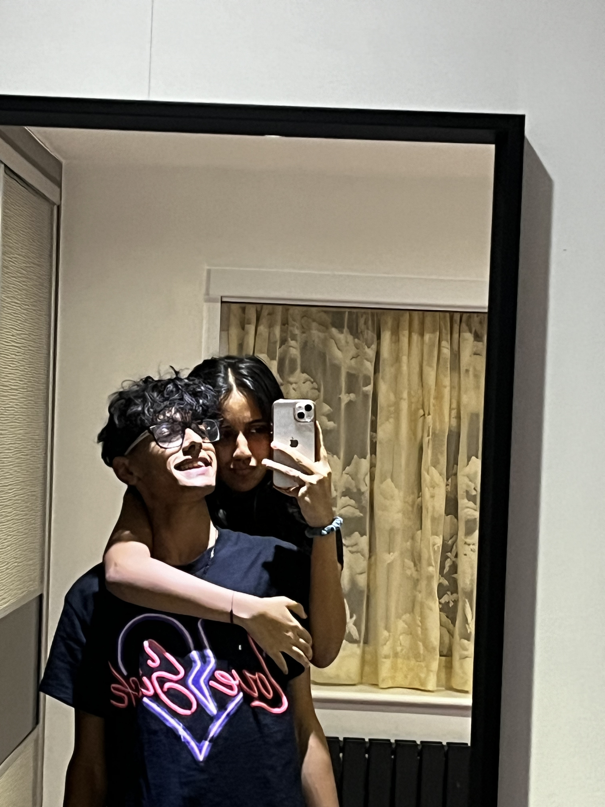
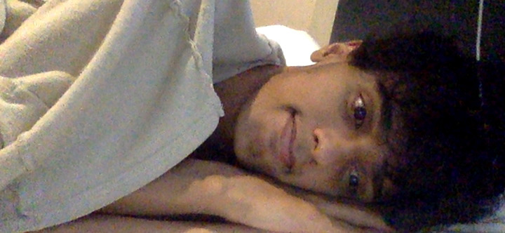
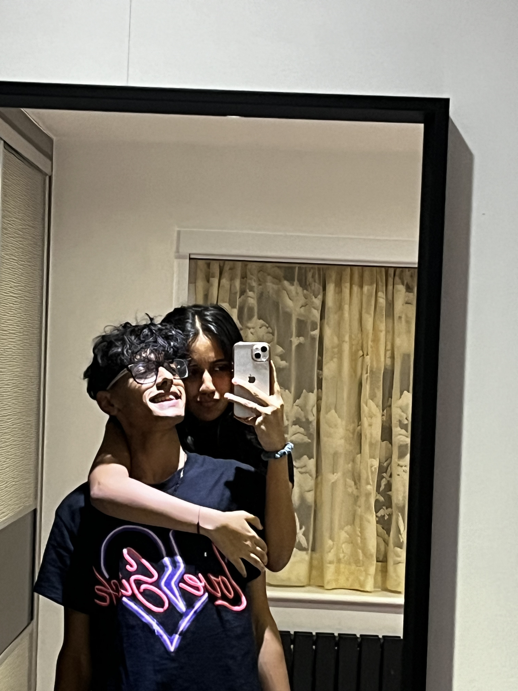
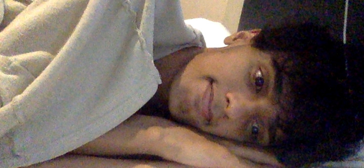
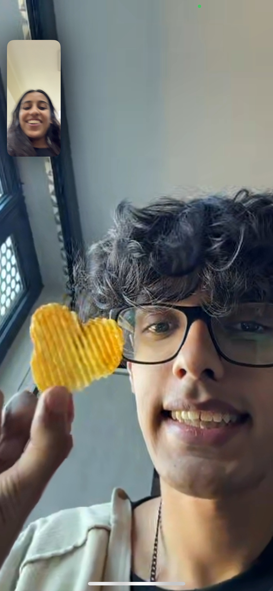
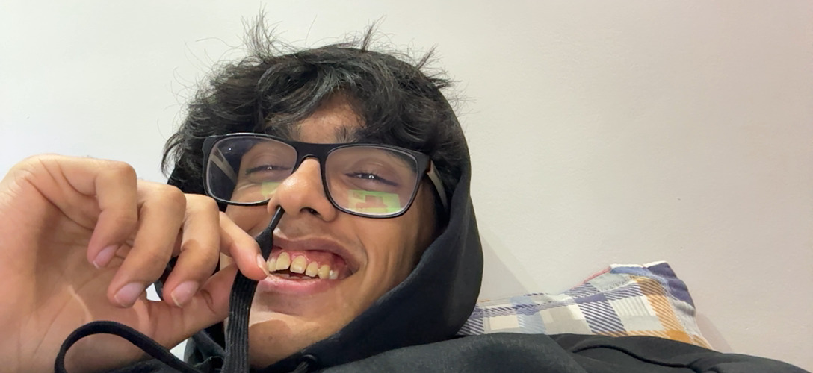
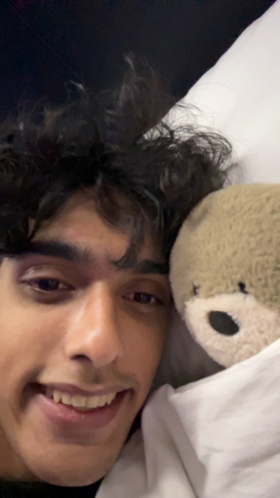
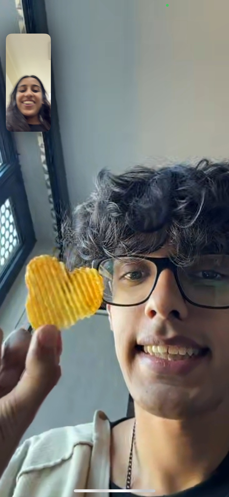
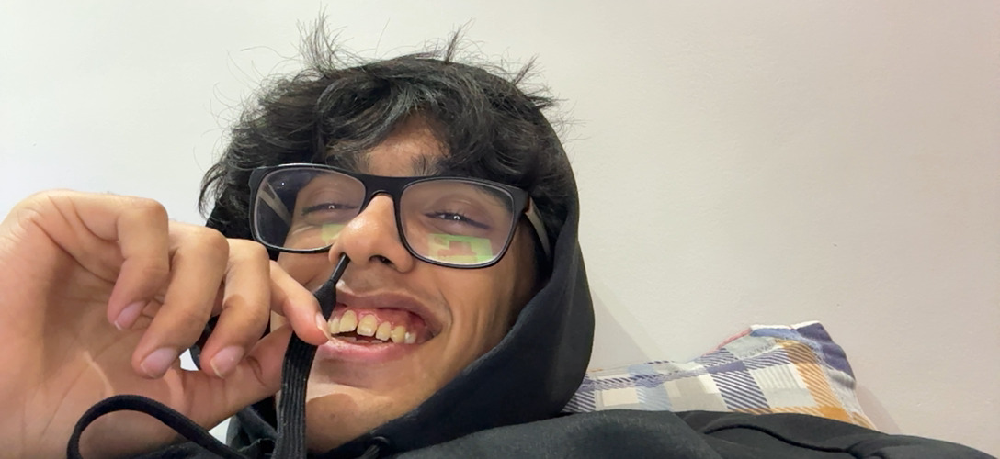
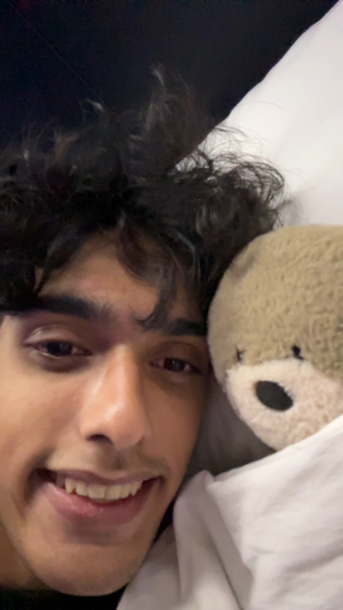

 





So I don’t know if I should’ve included right after the breakup here, whatever. So you’d hurt me, and yourself, a lot. Now what? You told me that you understood if I never wanted to talk to you again. I didn’t know what I wanted, I just wanted you back. I didn’t want to have so much confusion. I just wanted to be happy with my bubu. I was so confused why you did that. I made you promise not to drink. I'm my memory, but by that I meant to not make any stupid/ rash/ immature decisions in my name. I know you didn’t do it because you missed me, but I know it wasn’t because you were completely over me yet. WHY AM I HURTING MYSELF MORE. Ok that’s all anyways. I just went to shit from this point. My mental health took a complete plunge, I was losing weight and I was physically not well. I needed you, I needed you a lot. I cried almost everyday and wished you were by my side, or that you weren’t so silly. Two days before quiz 2 I realised I probably wouldn’t be able to do it by myself, so I came home. Seeing you in person already helped so so much. Looking at the photos of that little break, I was just like huh. We broke up? I was so much calmer that week. I did work, but I also enjoyed myself. You let me come to Notts, meet your friends, come intrude in your life(I’m sorry Nimai I love you). WE SLEPT TOGETHER FOR THE FIRST TIME!!! But of course, I had to leave. I came back to India. I, of course, wasn’t magically perfect and better. The place that has given me some of my worst days, of course I was going to hate being back. I left my home, my favourite people and I came back to the place that had hurt me so much. I was crying, of course a lot, and uncontrollably. I called you, and I know you’re also just a kid bubu but somethings still hurt. You said ‘it feels like nothings changed’. That hurt so much. I moved countries again and I wanted you to understand like you always do and it felt like you were just calling me dramatic and stupid, I felt like I was begging for your attention or understanding. We did work on this though. Hehe, you also wrote me a really cute letter. I was now back in uni and my only aim was to just get through the month. It was a ROUGH month. Hang on, I'm talking too much about myself. I mean because it was a long distance and I was the only one mentally unstable, I don't really know how to include your perspective. Other than the fact that you were so understanding. Ok no why am I doubting myself it’s ok I’m making a whole website, gosh, you should appreciate this(you know everytime I write osh I can here you imitating me and it’s they cutest thing ever). Anyways. Last month, ROUGH, spent most days crying but trying to get better, you were there by my side through it all. You honestly were. I hated my friends group, you sat and listened to me bawl my eyes out and cry and cry and you made me feel so valid and loved and completely justified. The ami thing didn’t hurt as much anymore. I felt better. I’d healed much more from that. But unfortunately I think it hurt me at a point where I was already vulnerable, so I ended up taking so many hits I was pretty broken. I’m sorry, this must’ve taken a toll on our relationship as well (I mean we know it did). Thank you for being there. The last two weeks before coming we barely ever called. The first week I was studying and the next week I was messing around. On both occasions you’d smile in the background and say “no no no, go I’m glad you’re _____” and this would either be studying or having fun. Bubu how one person can be so selfless and understanding I do not understand. You acknowledged the fact that you had become one of my only sources of joy. Nimai I know how big of an ask it is that one person looks to you for so much of their happiness. I’m sorry. I hope I can make it better. I’m trying, I promise. I love you bubu. A lot of very late nights later, I finally got to fly out to the UK, and we entered the next phase.